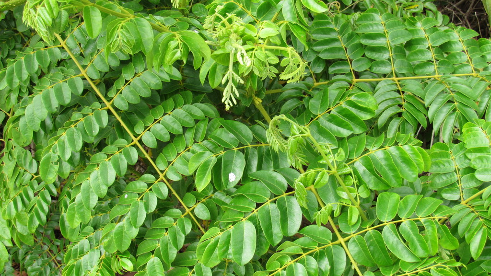

- The stems are covered in recurved spines that catch on everything — clothing, skin, passing animals. This is deliberate: the plant uses passing animals and people to carry its seeds in the spiny pods that also catch on fur and fabric.
- A Florida native coastal plant with an unusually wide distribution — found on tropical and subtropical coastlines on both sides of the Atlantic and Pacific. The seeds float and remain viable after ocean transport.
- The round, gray, marble-like seeds were historically used as game pieces and decorative beads. Pods are spiny; the seeds inside are smooth and hard.
- A significant larval host for the Cloudless Sulphur butterfly.
- The name is a linguistic throwback — "nicker" comes from an old English dialect word for a marble. The seeds are perfectly round, slate-gray, and virtually indestructible, and children across coastal communities historically gathered them as ready-made marbles for street games.
- Older texts list this plant as Caesalpinia bonduc. Modern genetic mapping moved it to the genus Guilandina — same plant, updated address.
Native to Florida and pantropical — found on coastal beaches and hammock margins throughout the world's tropics and subtropics. One of the most widely distributed plants in the world, dispersed by ocean currents. Member of Fabaceae — the legume family.
- The Gray Nickernut is a sprawling, heavily armed coastal shrub whose stems and even its leaf-stalks are covered in hooked spines that grab clothing, skin, and passing animals - both a defense and a way of hauling itself up over other vegetation. It is native to Florida and, remarkably, found on tropical coasts around the world, because its seeds are built for ocean travel.
- Those seeds are its signature: hard, round, and a smooth polished gray, they are buoyant and seawater-proof, drifting on ocean currents for months or years before washing ashore and sprouting on a distant beach - one of the classic 'sea beans' that beachcombers collect. The same toughness made them traditional game pieces and beads.
- It is a larval host for the Cloudless Sulphur and other sulphur butterflies. The seeds and leaves are toxic if eaten, and between that and the spines, it is a plant best appreciated at a respectful distance.
A documented larval host plant for the Cloudless Sulphur and other sulphur butterflies. The seeds and pods are eaten by some birds. The spiny scrambling growth provides protected cover for ground nesting birds.
The seed dispersal by ocean current means this plant connects coastal ecosystems across vast distances — a seed from this plant could theoretically wash ashore on another continent and establish.
A documented larval host for the Cloudless Sulphur and the Miami Blue — one of the most endangered butterflies in North America, with wild populations reduced to a few small colonies in the Florida Keys. Any plant that supports the Miami Blue is worth noting.
Small, yellow, in racemes. Not ornamentally showy.
Spiny pods containing round, hard, gray seeds. Seeds are the ID confirmation — smooth, marble-like, distinctive.
Scrambling, armed with recurved spines throughout. Handle with caution.
Scrambling to climbing spiny vine or sprawling shrub. Can form impenetrable thickets.
The recurved spines on the stems and pods are the first alert. The smooth round gray seeds inside the pods are unmistakable once you get past the spines to find them.
Don't eat this plant — the seeds and leaves contain toxic compounds. The spines are a physical hazard on their own.
The very hard seeds are occasionally roasted and eaten in some traditions, but it isn't a food plant here.
For dogs it's toxic if eaten, and the spines pose the same physical risk. Keep pets away.


- © Sherry Nigro (CC-BY-NC), via iNaturalist
- © Pammy63 (CC-BY-NC), via iNaturalist